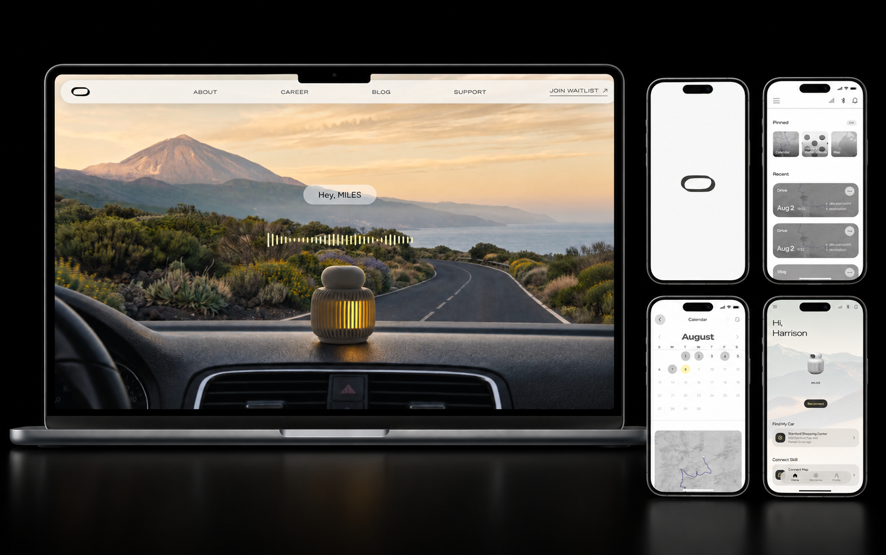

01
Primary case study
Lead UX · 2026–ongoing
Waybox
Designing core interactions for an AI-enabled mobile product, from first-use setup and device states to how people revisit everyday memories.
View case study